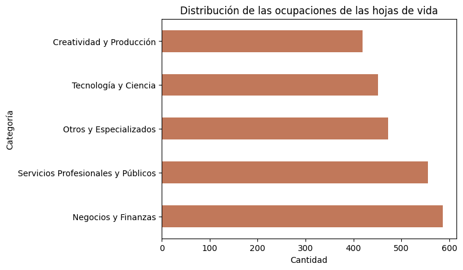
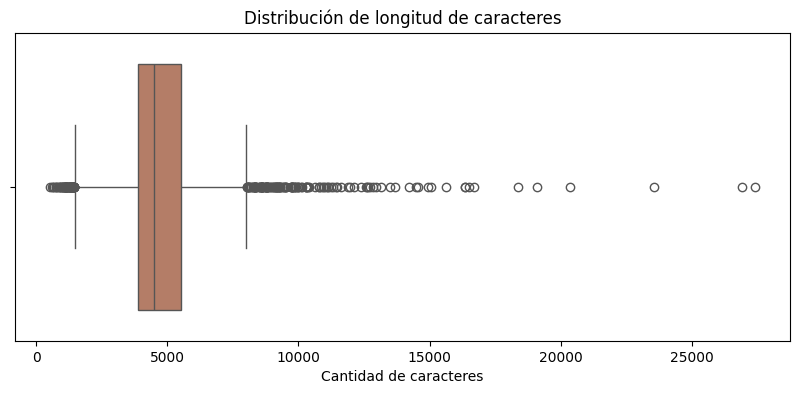
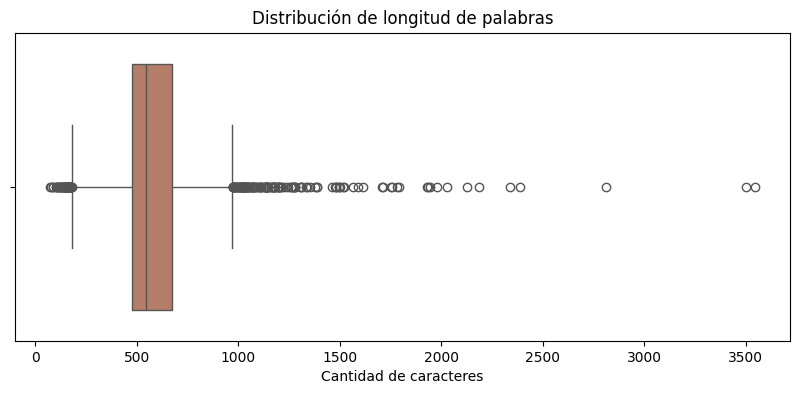
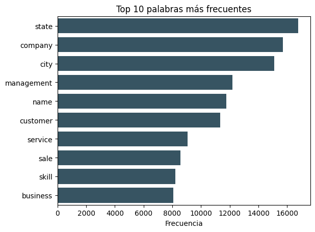
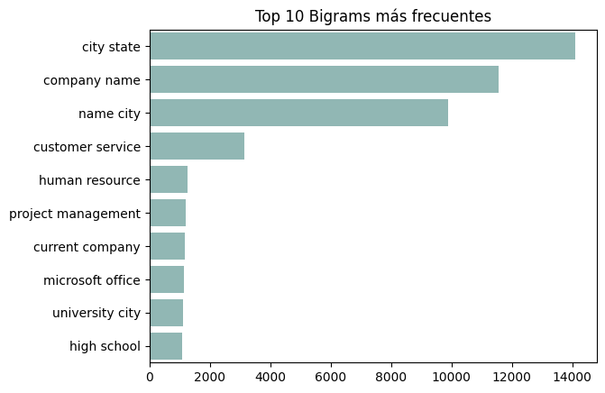
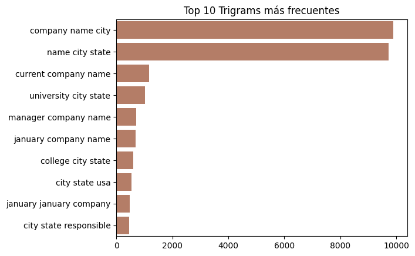
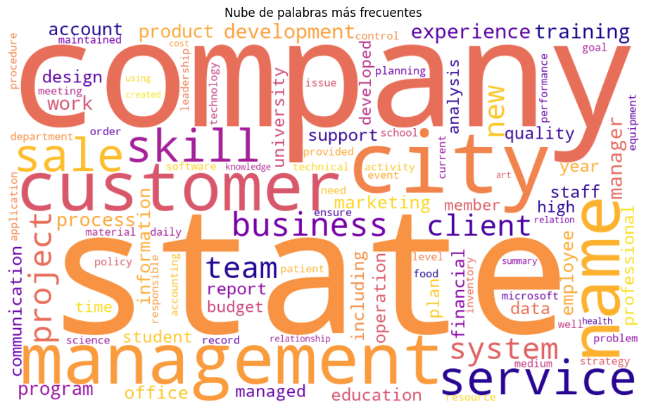

EDA#
🔹Data#
Se tienen 2,484 registros de hojas de vida, resumidos en 24 categorías únicas.
<class 'pandas.core.frame.DataFrame'>
RangeIndex: 2484 entries, 0 to 2483
Data columns (total 4 columns):
# Column Non-Null Count Dtype
--- ------ -------------- -----
0 ID 2484 non-null int64
1 Resume_str 2484 non-null object
2 Resume_html 2484 non-null object
3 Category 2484 non-null object
dtypes: int64(1), object(3)
memory usage: 77.8+ KB
Registros: 2484
Categorías únicas: 24
| Frecuency | Porcentaje | |
|---|---|---|
| Category | ||
| INFORMATION-TECHNOLOGY | 120 | 4.83 |
| BUSINESS-DEVELOPMENT | 120 | 4.83 |
| FINANCE | 118 | 4.75 |
| ADVOCATE | 118 | 4.75 |
| ACCOUNTANT | 118 | 4.75 |
| ENGINEERING | 118 | 4.75 |
| CHEF | 118 | 4.75 |
| AVIATION | 117 | 4.71 |
| FITNESS | 117 | 4.71 |
| SALES | 116 | 4.67 |
| BANKING | 115 | 4.63 |
| HEALTHCARE | 115 | 4.63 |
| CONSULTANT | 115 | 4.63 |
| CONSTRUCTION | 112 | 4.51 |
| PUBLIC-RELATIONS | 111 | 4.47 |
| HR | 110 | 4.43 |
| DESIGNER | 107 | 4.31 |
| ARTS | 103 | 4.15 |
| TEACHER | 102 | 4.11 |
| APPAREL | 97 | 3.90 |
| DIGITAL-MEDIA | 96 | 3.86 |
| AGRICULTURE | 63 | 2.54 |
| AUTOMOBILE | 36 | 1.45 |
| BPO | 22 | 0.89 |
Las categorías de las hojas de vida dentro del DataSet tienen frecuencias variables, muy altas o muy bajas, que presentar un claro desbalance. Para efectos del análisis hemos de agrupar los registros en macro categorías un poco más balanceadas.
# Mapeo de categorías a macrogrupos
def map_macrogrupo(label):
# Areas económico-empresariales
if label in ['BUSINESS-DEVELOPMENT', 'ACCOUNTANT', 'FINANCE', 'BANKING', 'CONSULTANT']:
return 'Negocios y Finanzas'
# Innovación, técnica y sistemas
elif label in ['INFORMATION-TECHNOLOGY', 'ENGINEERING', 'DIGITAL-MEDIA', 'AVIATION']:
return 'Tecnología y Ciencia'
# Profesiones orientadas a servicios
elif label in ['ADVOCATE', 'PUBLIC-RELATIONS', 'HR', 'TEACHER', 'HEALTHCARE']:
return 'Servicios Profesionales y Públicos'
# Diseño, arte, moda y construcción
elif label in ['DESIGNER', 'ARTS', 'APPAREL', 'CONSTRUCTION']:
return 'Creatividad y Producción'
# Áreas diversas, operativas o nicho
elif label in ['FITNESS', 'CHEF', 'AGRICULTURE', 'AUTOMOBILE', 'BPO', 'SALES']:
return 'Otros y Especializados'
else:
return 'Sin categoría'
Categorías únicas: 5
| Frecuency | Porcentaje | |
|---|---|---|
| macro_label | ||
| Negocios y Finanzas | 586 | 23.59 |
| Servicios Profesionales y Públicos | 556 | 22.38 |
| Otros y Especializados | 472 | 19.00 |
| Tecnología y Ciencia | 451 | 18.16 |
| Creatividad y Producción | 419 | 16.87 |

Los grupos de estudio tienen una distribución bastante equilibrada, con una ligera predominancia de las hojas de vida relacionadas a las áreas de Negocios y Finanzas (23.6%) y Servicios profesionales y públicos (22.4%). El grupo con menor representación es el de Creatividad y Producción (16.8%), pero aún así cuenta con una cantidad significativa de registros para análisis posteriores.
Estadístico chi2: 40.373
Valor p: 0.0000
De acuerdo al resultado de la prueba de Chi-Cuadrado para bondad, se rechaza la hipótesis de que las clases tengan igual proporción, es decir, las categorias no están distribuidas de manera uniforme.
🔹Sobre el texto#
| char_len | word_len | sent_len | |
|---|---|---|---|
| count | 2483.000000 | 2483.000000 | 2483.000000 |
| mean | 6297.835683 | 811.652437 | 36.343536 |
| std | 2766.943443 | 370.723976 | 23.735855 |
| min | 881.000000 | 113.000000 | 1.000000 |
| 25% | 5162.500000 | 651.000000 | 21.000000 |
| 50% | 5887.000000 | 757.000000 | 34.000000 |
| 75% | 7227.500000 | 933.000000 | 47.000000 |
| max | 38842.000000 | 5190.000000 | 397.000000 |
La tabla detalla la distribución de la extensión de los textos en las hojas de vida. En promedio, cada texto contiene aproximadamente 6,300 caracteres, 812 palabras y 36 oraciones, lo cual sugiere que se trata de documentos relativamente extensos.
El rango es considerable: algunos textos tienen apenas 113 palabras, mientras que otros alcanzan hasta 5,190 palabras. El hecho de que el percentil 75 esté por encima de 7,200 caracteres y 933 palabras sugiere que al menos una cuarta parte de los textos son bastante densos.
🔹 Limpieza de texto#
# [Func] Limpieza de texto
stop_words = set(stopwords.words('english'))
lemmatizer = WordNetLemmatizer()
def text_cleaner(text):
text = text.lower()
text = re.sub(r"\n|\t", " ", text) # elimina saltos de línea y tabulaciones
text = re.sub(r"http\S+|www\S+|@\S+|#\S+|\d+", " ", text) # elimina URLs, menciones, hashtags, números
text = re.sub(r"[_]{2,}", " ", text) # elimina bloques como __________
text = re.sub(r"\*", " ", text) # elimina asteriscos
text = re.sub(f"[{re.escape(string.punctuation)}]", " ", text) # elimina puntuación restante
text = re.sub(r"\s+", " ", text) # colapsa múltiples espacios
tokens = word_tokenize(text)
tokens = [t for t in tokens if t not in stop_words and len(t) > 2]
tokens = [lemmatizer.lemmatize(t) for t in tokens]
return " ".join(tokens)
df['clean_text'] = df['Resume_str'].astype(str).apply(text_cleaner)
Registros con texto vacío: 0
Registros restantes: 2483
🔹Análisis longitudinal#
| word_len | char_len | |
|---|---|---|
| count | 2483.000000 | 2483.000000 |
| mean | 583.997181 | 4793.141764 |
| std | 260.107812 | 2139.580719 |
| min | 74.000000 | 529.000000 |
| 25% | 476.000000 | 3900.000000 |
| 50% | 546.000000 | 4484.000000 |
| 75% | 673.000000 | 5539.000000 |
| max | 3543.000000 | 27396.000000 |
Luego de aplicar una limpieza de texto, la distribución varia un poco. Los textos siguen teniendo rango muy amplio, con mínimo 74 palabras y 529 caracteres, llegando a un máximo de 3543 palabras y 27,396 caracteres. La media del texto contenido en la hoja de vida es de 584 palabras (\(\pm\) 260) y 4,793 caracteres (\(\pm\) 2139), es decir, que nos enfrentamos a textos extensos. Los casos más extremos son los textos con más de mil palabras y 75,000 caracteres.


| macro_label | word_len | |
|---|---|---|
| 0 | Creatividad y Producción | 562.947494 |
| 1 | Negocios y Finanzas | 589.776068 |
| 2 | Otros y Especializados | 547.345339 |
| 3 | Servicios Profesionales y Públicos | 605.834532 |
| 4 | Tecnología y Ciencia | 607.494457 |
De acuerdo a las categorías, las hojas de vida del grupo Tecnología y Ciencia son las que mayor cantidad de palabras presentan con 607 en promedio. Las más cortas son las relacionadas a los empleos de Creatividad y producción, con 562 palabras en promedio.
🔹Análisis de frecuencia de palabras y n-gramas#



🔹Nubes de palabras#

🔹Dataset preprocesado#
df['tokens'] = df['clean_text'].apply(lambda x: x.split())
final_df = df[['macro_label', 'clean_text', 'tokens']]
final_df.to_json('../Data/clean_words.json', orient='records', lines=True)
| macro_label | clean_text | tokens | |
|---|---|---|---|
| 0 | Servicios Profesionales y Públicos | administrator marketing associate administrato... | [administrator, marketing, associate, administ... |
| 1 | Servicios Profesionales y Públicos | specialist operation summary versatile medium ... | [specialist, operation, summary, versatile, me... |
| 2 | Servicios Profesionales y Públicos | director summary year experience recruiting pl... | [director, summary, year, experience, recruiti... |
| 3 | Servicios Profesionales y Públicos | specialist summary dedicated driven dynamic ye... | [specialist, summary, dedicated, driven, dynam... |
| 4 | Servicios Profesionales y Públicos | manager skill highlight skill department start... | [manager, skill, highlight, skill, department,... |